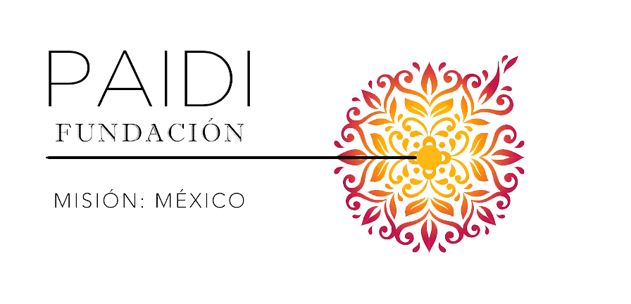

Paidi es una fundación sin fines de lucro cuya misión es impulsar una nueva cultura de protección, desarrollo y bienestar emocional de niños en situaciones de riesgo y de bajos recursos.
Misión
Preservar una cultura de protección y desarrollo de la niñez asegurando condiciones para que los niños y niñas tengan una vida digna con derechos y amor.
Visión
Promover que cada niño y niña cuenten con vínculos afectivos que perduren en el tiempo, procurando la inclusión y brindando oportunidades a los menos favorecidos.
